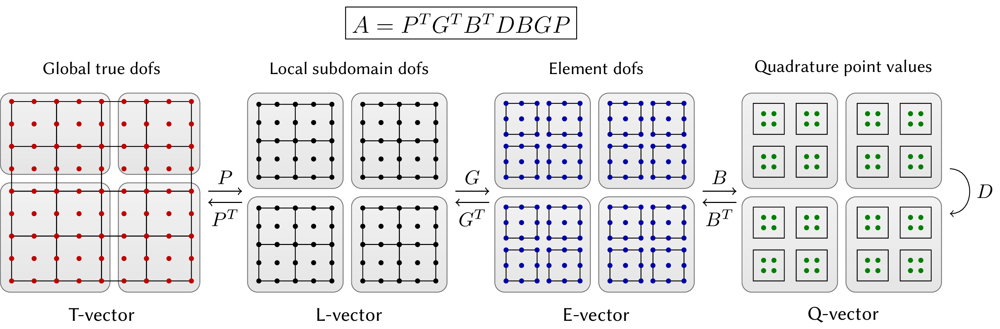

Performance and Partial Assembly
This document provides a brief overview of the tensor-based high-performance and partial assembly features in MFEM. In the traditional finite element setting, the operator is assembled in the form of a matrix. The action of the operator is computed by multiplying with this matrix. At high orders this requires both a large amount of memory to store the matrix, as well as many floating point operations to compute and apply it. Partial assembly is a technique that allows for efficiently applying the action of finite element operators without forming the corresponding matrix. This is particularly important when running on GPUs.
Partial assembly is enabled at the level of the BilinearForm by setting
the assembly level:
a->SetAssemblyLevel(AssemblyLevel::PARTIAL);
Once partial assembly is enabled, subsequent calls to member functions such as
FormLinearSystem will result in an Operator that represents the action of
the bilinear form a, without assembling a matrix. This functionality is
illustrated in several MFEM examples, including examples 1, 3, 4,
5, 6, 9, 24, and 26.
Note that partial assembly is currently implemented for tensor-product elements (i.e. quadrilaterals and hexahedra). Partial assembly for simplex elements (triangles and tetrahedra) is planned.
Preconditioning with Partial Assembly
When using partial assembly, the system matrix is no longer available for
constructing preconditioners. This means that some of the standard
preconditioners in MFEM such as HypreBoomerAMG and GSSmoother cannot be
used.
MFEM allows for the efficient construction of diagonal (Jacobi) smoothers for
partially assembled operators on quad and hex meshes using the class
OperatorJacobiSmoother. This class efficiently assembles the diagonal of the
corresponding matrix, exploiting the tensor-product structure for efficient
evaluation.
MFEM also allows for Chebyshev
smoothing with partial
assembly using the class OperatorChebyshevSmoother. This smoother uses
estimates of the eigenvalues of the operator computed using the power
method, and is built upon the
functionality of OperatorJacobiSmoother.
Very efficient partially assembled h-multigrid and p-multigrid preconditioners can be constructed by leveraging a hierarchy of discretizations and the smoothers described above. This functionality is illustrated in Example 26.
Finite Element Operator Decomposition
The partial assembly functionality in MFEM is based on decomposing the finite element operator into a nested sequence of operations that act on different levels of the discretization.
Finite element operators are typically defined through weak formulations of partial differential equations that involve integration over a computational mesh. The required integrals are computed by splitting them as a sum over the mesh elements, mapping each element to a simple reference element (e.g. the unit square) and applying a quadrature rule in reference space.
This sequence of operations highlights an inherent hierarchical structure present in all finite element operators where the evaluation starts on global (trial) degrees of freedom (dofs) on the whole mesh, restricts to degrees of freedom on subdomains (groups of elements), then moves to independent degrees of freedom on each element, transitions to independent quadrature points in reference space, performs the integration, and then goes back in reverse order to global (test) degrees of freedom on the whole mesh.
This is illustrated below for the case of a symmetric linear operator. We use the notions T-vector, L-vector, E-vector and Q-vector to represent the sets corresponding to the (true) degrees of freedom on the global mesh, the split local degrees of freedom on the subdomains, the split degrees of freedom on the mesh elements, and the values at quadrature points, respectively.
We refer to the operators that connect the different types of vectors as:
- Subdomain restriction P
- Element restriction G
- Basis (Dofs-to-Qpts) evaluator B
- Operator at quadrature points D
More generally, if the operator is nonsymmetric or the test and trial space differ, then the operators mapping back from quadrature points to test spaces may not be transposes of P, G and B, but they still have the same basic structure and interpretation.

Note that in the case of adaptive mesh refinement (AMR), the prolongation operator P involves not only extracting sub-vectors, but evaluating values at constrained degrees of freedom through the AMR interpolation. There can also be several levels of subdomains (P1, P2, etc.), and it may be convenient to split D as the product of several operators (D1, D2, etc.).
Partial Assembly in MFEM
Since the global operator A is just a series of variational restrictions with B, G and P, starting from its point-wise kernel D, a "matrix-vector product" with A can be performed by evaluating and storing some of the innermost variational restriction matrices, and applying the rest of the operators "on-the-fly". For example, one can compute and store a global matrix on T-vector level. Alternatively, one can compute and store only the subdomain (L-vector) or element (E-vector) matrices and perform the action of A using matvecs with P or P and G. While these options are natural for low-order discretizations, they are not a good fit for high-order methods due to the amount of FLOPs needed for their evaluation, as well as the memory transfer needed for a matvec.
MFEM's partial assembly functionality computes and stores only D (or portions of it) and evaluates the actions of P, G and B on-the-fly. Critically for performance, MFEM takes advantage of the tensor-product structure of the degrees of freedom and quadrature points on quadrilateral and hexahedral elements to perform the action of B without storing it as a matrix. Note that the action of B is performed elementwise (it corresponds to a block-diagonal matrix), and the blocks depend only on the element order and reference geometry. Currently, only fixed order and geometry is supported, meaning that all the blocks of B are identical.
The partial assembly algorithm requires the optimal amount of memory transfers (with respect to the polynomial order) and near-optimal FLOPs for operator evaluation. It consists of an operator setup phase, that evaluates and stores D and an operator apply (evaluation) phase that computes the action of A on an input vector. When desired, the setup phase may be done as a side-effect of evaluating a different operator, such as a nonlinear residual. The relative costs of the setup and apply phases are different depending on the physics being expressed and the representation of D.
Parallel Decomposition
After the application of each of the first three transition operators, P, G and B, the operator evaluation is decoupled on their ranges, so P, G and B allow us to "zoom-in" to subdomain, element and quadrature point level, ignoring the coupling at higher levels.
Thus, a natural mapping of A on a parallel computer is to split the T-vector over MPI ranks (a non-overlapping decomposition, as is typically used for sparse matrices), and then split the rest of the vector types over computational devices (CPUs, GPUs, etc.) as indicated by the shaded regions in the diagram above.
One of the advantages of the decomposition perspective in these settings is that the operators P, G, B and D clearly separate the MPI parallelism in the operator (P) from the unstructured mesh topology (G), the choice of the finite element space/basis (B) and the geometry and point-wise physics D. These components also naturally fall in different classes of numerical algorithms: parallel (multi-device) linear algebra for P, sparse (on-device) linear algebra for G, dense/structured linear algebra (tensor contractions) for B and parallel point-wise evaluations for D.
Essential Boundary Conditions
Essential boundary conditions for partially assembled operators are enforced
using the class ConstrainedOperator (or, for rectangular systems,
RectangularConstrainedOperator). These operators represent the action of the
partially assembled operator, together with specified constraints on essential
degrees of freedom. The Operator returned from, for example,
BilinearForm::FormLinearSystem or BilinearForm::FormSystemMatrix will in
fact be a ConstrainedOperator. The Operator returned from
MixedBilinearForm::FormRectangularSystemMatrix will be a
RectangularConstrainedOperator. These classes perform the matrix-free
equivalent of eliminating the rows and columns of the system matrix
corresponding to the essential degrees of freedom.
Partial Assembly for Discontinuous Galerkin methods
A complementary partial assembly decomposition is used for Discontinuous Galerkin methods to handle face terms, where a similar sequence of operators is applied on the faces to compute the numerical fluxes. However, since elements are decoupled, the element restriction G is the identity, and a face restriction GF is used instead to compute the numerical fluxes and couple elements together. This face restriction GF goes from element degrees of freedom to face degrees of freedom. Then a BF operator can be applied on the faces. An analogous DF operator is then applied at the face quadrature points.
Currently, we support partial assembly only for Gauss-Lobatto and Bernstein bases, with integrators that don't require derivatives on the faces.
High-Performance Templated Operators
MFEM also offers a set of templated classes to evaluate finite element operators on tensor-product (quadrilateral and hexahedral) meshes, described in further detail here.